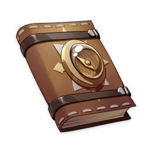

Teyvat & Unknown · Books & Literature
Diary of Roald the Adventurer
Roald’s eleven-volume travel diary ranges from Dragonspine and Liyue to Inazuma, mixing field notes with local legends whose reliability varies.

Collection and author
Diary of Roald the Adventurer is an eleven-volume collection written in-world by the traveling adventurer Roald. The books are found in camps and settlements across Teyvat, and their descriptions reflect the places where he left them. HoYoWiki identifies the Ritou and Tsurumi records as quest items belonging to the same book collection.
The volumes are travel writing rather than a continuous history. Roald records what he sees, repeats local accounts, and sometimes admits that he cannot verify what he has heard. That first-person perspective matters: an elder’s tale, an explorer’s guess, and a quest-confirmed event do not have the same evidentiary weight.
A route across Teyvat
The collection’s first eight numbered locations are in Liyue: Sal Terrae, Qingce Village, Aocang Lake, Luhua Pool, Yaoguang Shoal, Guyun Stone Forest, Qingyun Peak, and Qingxu Pool. Volume 9 is set in Dragonspine, Volume 10 in Ritou, and Volume 11 on Tsurumi Island. The sequence is not a straightforward itinerary: Roald’s Qingce account refers to leaving Dragonspine even though the Dragonspine entry bears the later volume number.
Across those locations, the diary moves between practical travel observations and stories attached to the landscape. Its recurring value is the view of Teyvat from the road: local customs, dangerous terrain, old ruins, and the way one region’s history is remembered by its inhabitants.
Sal Terrae and the God of Salt
Volume 1 places Roald among the ruins at Sal Terrae and records Liyue folklore about a gentle God of Salt who sheltered people during the Archon War. The diary is one piece of that account, not the whole history. Zhongli’s Story Quest, Historia Antiqua Chapter: Act I, later identifies the deity as Havria and gives the settlement’s end a more direct narrative context.
Read together, the book and quest distinguish the remembered image of a merciful god from the violence that ended her rule. The entry should not be used by itself to infer every detail of Havria’s history: the story quest supplies the name and the circumstances that Roald’s travel note does not establish on its own.
Qingce Village and the legend of Chi
Volume 2 records what Qingce’s elders tell Roald about an ancient monster named Chi and Morax’s victory over it. In the local version, Chi’s remains are tied to the stone, water, and terraced landscape around Mt. Qingce. Roald compares the account with the rocks he can see and leaves room for doubt about whether the story is literal history.
That hesitation is useful context. The diary preserves a village tradition; it does not turn every detail of the landscape’s origin into an independently witnessed fact. The book supports the association between Chi and Qingce’s remembered past, while other game sources should be consulted for the broader account of the conflict and its aftermath.
The later Liyue volumes
Volumes 3 through 8 keep Roald in Liyue, from the mountains around Aocang and Qingyun to Luhua Pool, Yaoguang Shoal, Guyun Stone Forest, and Qingxu Pool. The settings bring him close to places associated with adepti, old battles, and abandoned ruins, but the diary remains a traveler's notebook rather than a systematic account of those subjects.
Where Roald repeats a legend or offers an explanation for a ruin, the page should be read as a report of what he encountered or was told. A connection to a named adeptus, deity, or historical event needs support from a separate quest, book, or item record before it can be stated as fact.
Ritou and Tsurumi Island
Volume 10 is the Ritou diary entry. Its item record places it on the wharf and describes a traveler’s journal left behind by Roald. In the Inazuma storyline, the Sakoku Decree and the restrictions on movement shape his time in the port; his observations sit alongside the larger story of Inazuma’s closed borders rather than replacing the quest account of those events.
Volume 11 is associated with Tsurumi Island and The Saga of Mr. Forgetful. HoYoWiki lists the item as obtainable after that quest and describes it as another diary left behind by Roald. The entry reflects how the island’s fog disrupts his exploration and memory, including a recollection of meeting a child on the supposedly long-abandoned island. The diary alone does not explain the child’s identity; the Through the Mists quest sequence supplies the wider context for Tsurumi and Ruu.
What the diaries establish
The collection establishes Roald as an adventurer who traveled through several regions and left written observations behind. Its eleven locations, the contents of each in-game volume, and the later quest-item records are verifiable parts of the game. Volumes 1 and 2 are especially useful because they preserve local traditions about Havria and Chi, while the Ritou and Tsurumi entries connect the collection to Inazuma’s quest history.
The diary is not a neutral encyclopedia. Roald can relay folklore, speculate from what he sees, or forget parts of an experience. This guide therefore treats his firsthand observations, the stories he hears, and details later confirmed by quests as separate kinds of evidence. It does not reproduce the books’ full text or claim that every legend in them is literal history.
This is an original CoreGG reading guide, not an official HoYoverse article or a reproduction of the game text. Source links below identify the records used so you can check the original context.
Sources & references
Check these sources for the original game text and reference trail.